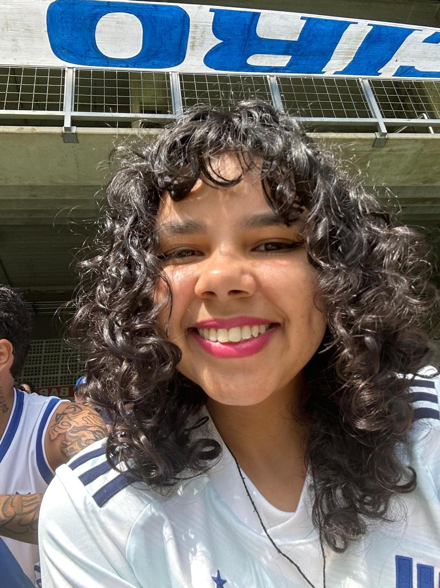

Olá, eu sou a Layla Ferreira, tenho 21 anos e tenho TEA nível um de suporte, estudo no CEFET-MG a quase 6 anos, fiz técnico em Informática com início em 2020 e terminei em 2022, e agora estou cursando Engenharia de Computação, estou começando o sétimo período agora, no segundo semestre de 2026. Também fiz um estágio na CI&T. Me identifico muito com a parte de web e visão computacional na área da tecnologia, também amo exatas, gosto de desenhar e colorir, amo a cor rosa(como dá para perceber pelo site rsrs). Como lazer, eu gosto de ir ao cinema, ao parque e ir ao estádio ver o cabuloso jogar, tanto o feminino quanto o masculino. Minha comida favorita é batata frita e a comida que não gosto é de carne e peixe. Moro com meu pai e minha irmã, também temos um cachorrinho, o Snoopy.